If you can't find the device you want to use (e.g. web-cam attached after Linuxtrack GUI was started, ...), press the "Refresh" button and check again.
Next thing that you can set is the camera orientation - normally you should not need to change this...
However, if your tracking device is positioned in any other way than in front of you with top pointing up
(you mounted TrackIR upside down for some reason, or you use laptop with a web-cam chip mounted upside down,...),
change the Camera Orientation to match your device's orientation.
Supported device types are the following:
TrackIR Setup (including SmartNav devices)
HID device setup
Wiimote Setup
Web-cam Setup
Web-cam Setup for face tracking
|
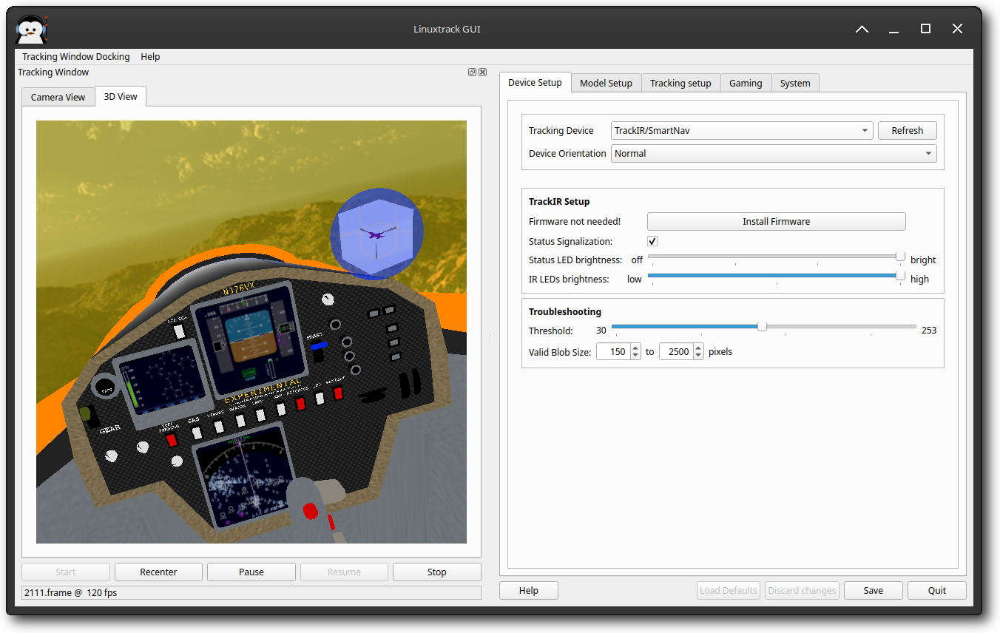 |
When using TrackIR devices with LinuxTrack X-IR on Linux, you need to install udev rules to grant your user account permission to access the TrackIR hardware. This guide explains the permission installation process and troubleshooting steps.
The first time you start LinuxTrack X-IR with a TrackIR device connected, you'll see a permission setup dialog if the required udev rules are not installed.
|
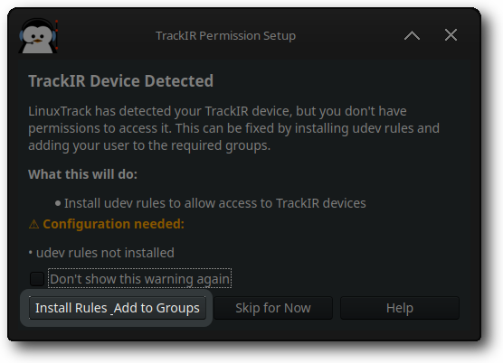 |
This dialog appears when:
To proceed with the installation:
If you start LinuxTrack X-IR without a TrackIR device connected and then plug it in later, you can trigger the permission setup by clicking the "Refresh" button in the Device Setup tab.
|
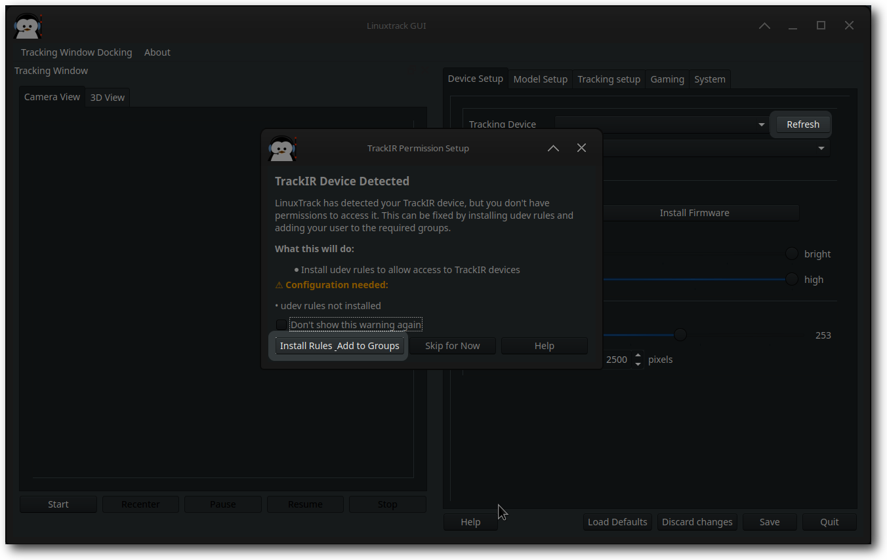 |
This will show the same permission setup dialog, allowing you to install the required udev rules and add your user to the necessary groups.
After successfully installing the TrackIR permissions, you'll see a completion dialog with important next steps.
|
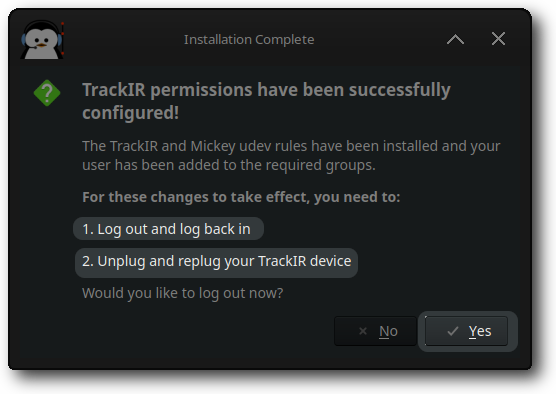 |
The installation process will:
For the permission changes to take effect, you must:
You can choose to log out immediately by clicking "Yes" in the completion dialog, or click "No" to log out manually later.
If the permission setup dialog appears again after completing the installation and following the required steps, try these troubleshooting steps:
Check if the udev rules were installed correctly:
ls -la /lib/udev/rules.d/99-TIR.rules ls -la /lib/udev/rules.d/99-Mickey.rules
Verify your user is in the required groups:
groups $USER
You should see groups like input, plugdev, uinput, and video for full device access.
USB webcams use /dev/video* and the video group — they are
not covered by the TrackIR/Mickey udev rules. If no webcam appears in the device list,
run sudo usermod -a -G video $USER, log out and back in, then verify with
v4l2-ctl --list-devices.
If the permission dialog continues to appear after logging out and back in, try rebooting your system:
If automatic installation fails, you can install the udev rules manually:
sudo cp 99-TIR.rules /lib/udev/rules.d/ sudo cp 99-Mickey.rules /lib/udev/rules.d/ sudo udevadm control --reload-rules sudo udevadm trigger
The TrackIR permission installation process:
Once properly installed, you won't see the permission setup dialog again, and your TrackIR device will work seamlessly with LinuxTrack X-IR.
Several TrackIR-specific troubleshooting controls live on the System tab under Troubleshooting options, not on Device Setup. See the System tab help for the full list. Two settings are especially relevant during TrackIR setup:
The Video_on Delay Timing option on the System tab under Troubleshooting options allows you to configure a delay after the Video_on command is sent to the TrackIR device during initialization. Although the control is on the System tab, it is documented here in the TrackIR setup flow. This setting should be left at Default (0 microseconds) unless you are experiencing issues with TrackIR camera LEDs not turning on properly.
Important: Only use the Manual delay setting if you are having specific LED issues where the green LEDs turn on but the red sensor LEDs do not activate, or if you see timeout errors in the logs.
In Default mode, no delay is applied after the Video_on command. This is the recommended setting for most users and should work correctly with the majority of TrackIR devices.
|
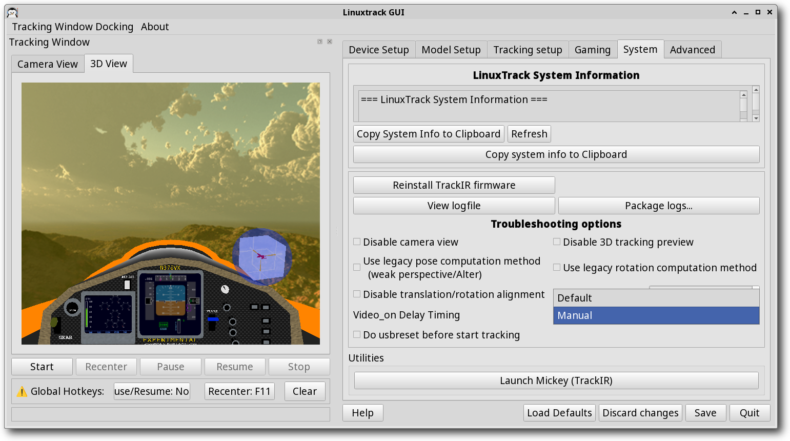 |
If you are experiencing timeout issues or LED activation problems (particularly with TrackIR 5 v2 devices), you can switch to Manual mode and set a custom delay value. The suggested value is 120000 microseconds (120 milliseconds), which has been found to resolve timeout issues on some TrackIR 5 v2 devices.
To use Manual mode:
|
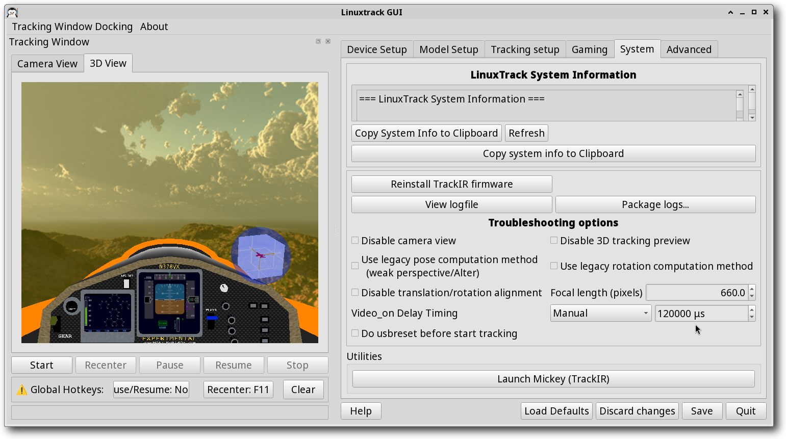 |
Note: This setting applies to all TrackIR devices. If you only experience issues with a specific TrackIR model, you may need to adjust the delay value accordingly. Values can range from 0 to 500000 microseconds.
Now you can try to start the tracking to verify the device is set up correctly.|
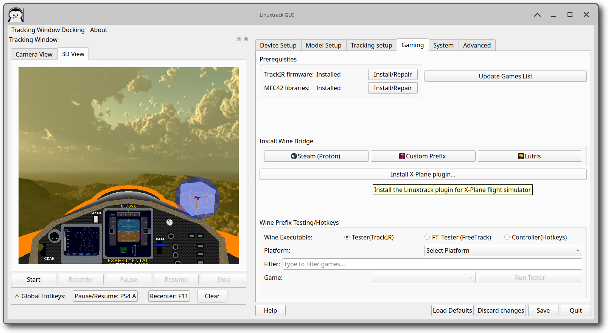 |
LinuxTrack X-IR v0.99.22+ includes comprehensive gaming platform integration for seamless Wine Bridge installation across different gaming platforms. The new Gaming tab provides centralized access to all gaming-related functionality.
For detailed instructions on setting up TrackIR firmware and Wine integration, see the TrackIR Firmware/Wine Integration Setup guide.
Before setting up Wine Bridge integration, ensure you have the following prerequisites:
The Gaming tab shows live status of these prerequisites and provides one-click installation/repair options when needed.
LinuxTrack X-IR automatically detects Steam installations and Proton versions, including:
To set up Wine Bridge for Steam games:
LinuxTrack X-IR provides complete Lutris integration with:
To set up Wine Bridge for Lutris games:
For custom Wine prefixes not managed by Steam or Lutris:
The Gaming tab includes comprehensive testing and hotkey configuration functionality:
To test Wine Bridge installation:
LinuxTrack X-IR v0.99.22+ includes enhanced cross-distribution support:
When done with axes setup, you can jump to the Tracking Setup chapter.
|
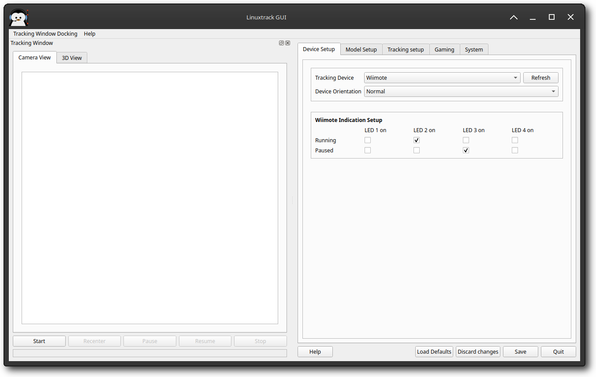 |
If Wiimote is the tracking device of your choice, first of all, make sure you have the Wiimote server running (comes along with Linuxtrack) and connected to the Wiimote.
If Wiimote server is not running, then start it, press the Connect button and then simultaneously press buttons "1" and "2" on the Wiimote . After a short pause, you should see the state change to Connected and one of LEDs on your Wiimote should blink briefly about every 5 seconds.
Due to the nature of Wiimote there is no way to tweak any parameters except for which LEDs should indicate running/paused tracker. Just select which LEDs should be on in the Running state and which should be on in the Paused state. However, if the battery life is crucial for you, you should turn all LEDs off at least in the Running state (in this state you are going to spend most of the time after all).
Now you can try to start the tracking to verify the device is set up correctly.
|
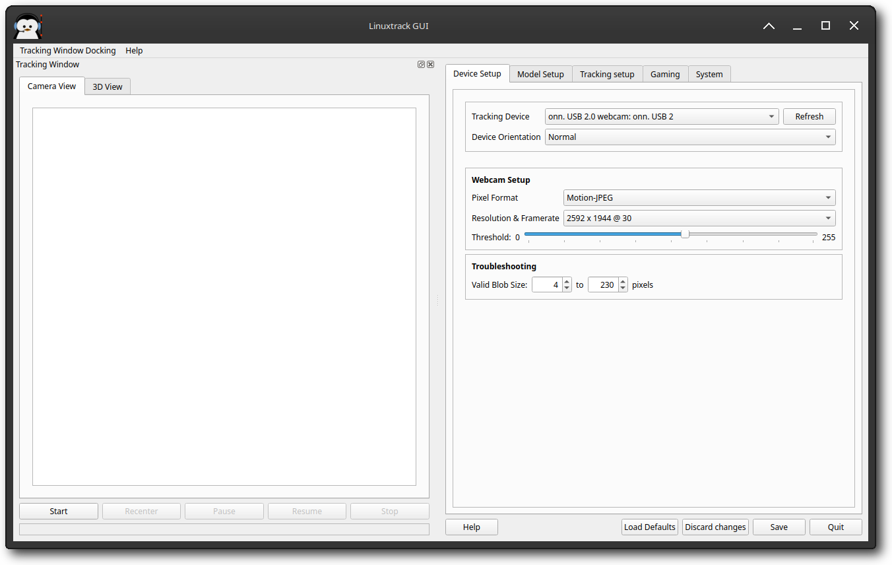 |
To configure a web-cam, first of all you have to set the Pixel Format. The preferred format is YUYV (native UVC web-cam format), but you can experiment and see which one works the best for you (just avoid the JPEG/MJPG formats as they aren't supported).
Continue by selecting the desired Resolution & Frame rate. The safest bet would be something around 352x288@30; when tracking with these setting works, you can experiment with different resolutions and frame rates.
To ensure best frame rate (stable and high), it is recommended to turn at least the Automatic exposure off (better turn off the rest of Auto... features too), if possible. Then set the exposure manually and tweak the rest of parameters (brightness, contrast, ...) to get good picture. On Linux you can use the guvcview for this purpose.
Now you can try to start the tracking to verify the device is set up correctly.
|
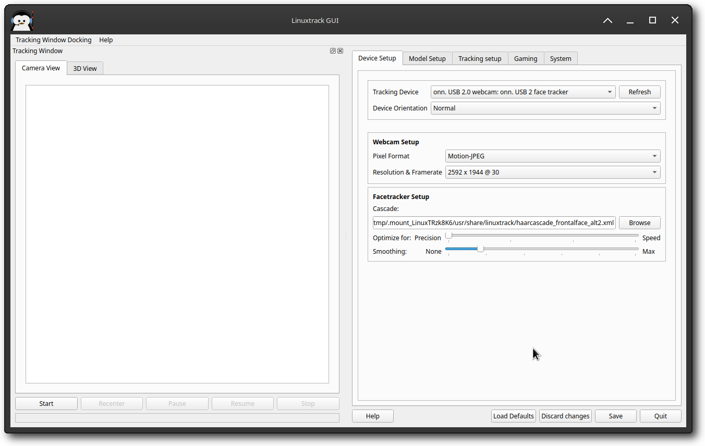 |
To configure a web-cam, first of all you have to set the Pixel Format. The preferred format is YUYV (native UVC web-cam format), but you can experiment and see which one works the best for you (just avoid the JPEG/MJPG formats as they aren't supported).
Continue by selecting the desired Resolution & Frame rate.
The safest bet would be something around 352x288@30; when tracking with these setting works, you can
experiment with different resolutions and frame rates.
The last thing to set before the first test is the path to the cascade used to track the face. OpenCV Haar and LBP cascades are supported. If the default cascade doesn't suit you, just browse to the cascade of your choice. On Linux you can find them in the following paths:
|
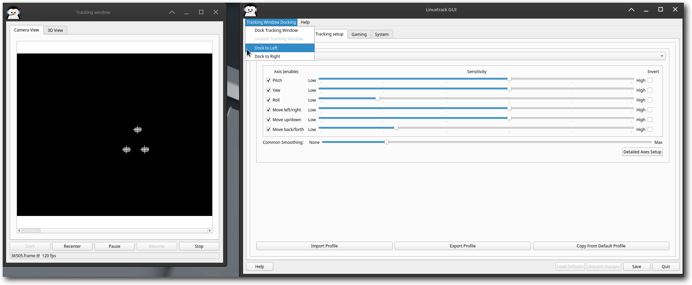 |
|
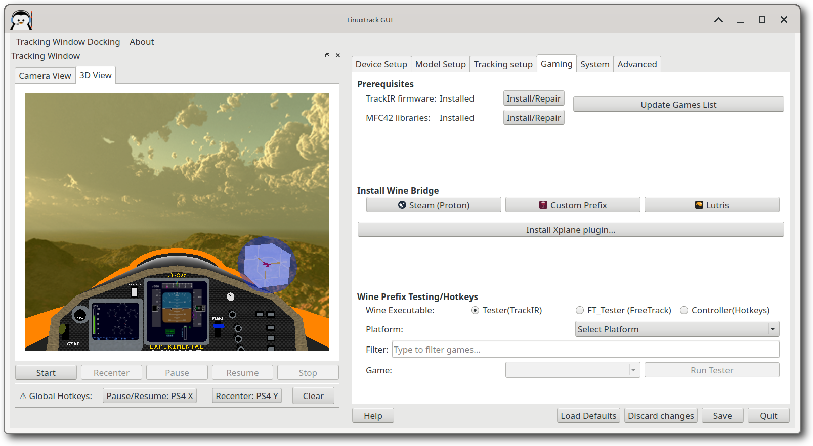 |
Under Global Hotkeys you can assign Pause/Resume and Recenter. These bindings accept a keyboard key or a joystick/HOTAS button and work system-wide (including while a Wine/Proton game has focus). Prefer a spare controller button so the game can still see the same stick for flight controls.
|
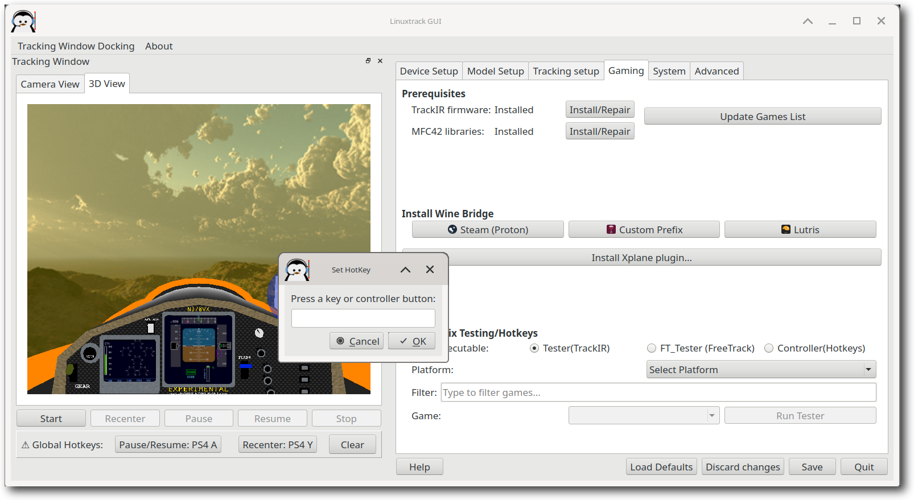 |
Click Assign next to a hotkey, then press a key or controller button in the
Set HotKey dialog. Use Clear to remove bindings.
Controller labels use a short name (for example PS4 A); hover the label for the full
device name. Bindings are kept if the controller is unplugged and become active again when it is
reconnected. Your user account typically needs membership in the input group to read
controller devices (then log out and back in if you just added yourself to the group).
There are two panes in this window, the first pane being the Camera View. This pane allows you to troubleshoot the tracking - it shows exactly what the camera sees, so it can show you for example any interfering light sources, unwanted reflections and so on. The second pane, 3D view shows what the result is going to look like in the simulator.
To start the tracking, all you have to do is press the Start button and wait for the device to initialize (usually takes couple of seconds).
In case of head tracking, you should see your head in the Camera View pane, with a white rectangle around it, or in case of model based tracking there should be 3 (or 1 in case of single point model) "blobs" (fields of bright pixels), each of which has a white cross inside (means a valid blob). You should check, that the rectangles/blobs with crosses are there through the full range of motions you plan to use.
Some devices allow you to do some "post-processing" steps to discriminate some of the interferences, but the first rule of troubleshooting is this: the best way to get rid of the interference is to remove it physically.
With infrared sensitive devices (TrackIR/SmartNav, Wiimote, ...) the interference sources might not be all that easily identifiable - things like light bulbs, lit cigars, candles, IR TV and other remote controls can cause considerable interference. Also sun can cause significant problems - not only direct sun, but also areas lit (and heated) by sun can be sources of severe interference.
When such a solution is not possible, different devices have different means that might help you to achieve better tracking results.
Another way to discriminate the "bad" blobs is according to their size - set the Valid blob size to values, that only the valid blobs satisfy (for higher resolution devices the range of values might be in range of 200 - 600). Just note, that these unwanted blobs can still interfere with the tracking, especially when they merge with some valid blob. Also don't forget to check, the whole range of motion you intend to use - for example setting the lower limit too high might break tracking when you move your head farther away from the camera.
Specialty of some TrackIR models, when using the reflective model is setting of the illuminating IR LEDs brightness. This can help you weaken unwanted reflections - just set the IR LEDs brightness somewhat lower.
When using a web-cam, make sure it is correctly focused and you get sharp image (best checked in some external application).
To minimize the impact of the background light on the web-cam, you might need a visible light filter - piece of magnetic tape material, exposed film, piece of magnetic material from diskette or even piece of black stocking might help there.
Some web-cams also contain IR filters, that can completely filter out light from IR LEDs. However removal of the IR filter might be non-trivial and you risk irreparable damage to the camera, so try that only as a last resort (for example you might use ordinary visible light LEDs instead; also higher current might help to "burn through" the IR filter, but be careful not to burn the LEDs instead!).
Also make sure that your face is well lit, but without sharp shadows.
If the rectangle stays around your face, but the tracking is still jumpy, you should adjust the Smoothing slider - moving the slider right steadies the tracking. Try adjusting the Filter Factor on the Tracking setup tab too - these two filters have somewhat different characteristics and complement each other.
The smoothing filter actually averages input values, ironing out big jumps, but it also introduces a lag. The filter in the Tracking setup tab works best when smoothing small jitter. Try finding some sweet spot that works for you.
To optimize the CPU usage, you may try to move the Optimize for slider towards the Speed end, trading a bit of precision for a considerably lower CPU usage.